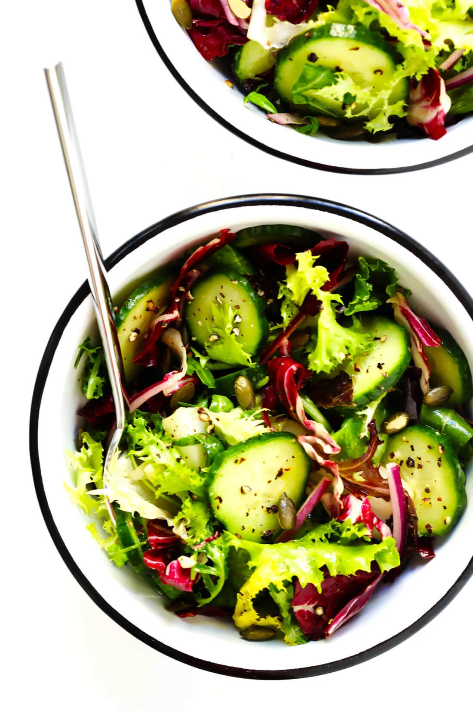

Salad

Everyday Salad
My favorite “everyday” salad recipe is quick and easy to make, tossed with
a simple and delicious lemony dressing, and so versatile that it goes with
just about everything!
Ingredients
- 5 ounces spring greens mix (or any salad greens you prefer)
- half of an English cucumber, very thinly sliced
- half of a medium red onion, peeled and very thinly sliced
-
1/2 cup pepitas or toasted pine nuts (or any other nuts or seeds you
prefer)
Steps
-
To Make The Dressing: Whisk all ingredients together in a bowl (or shake
together in a mason jar) until combined.
-
To Make The Salad: Combine all ingredients in a large salad bowl and
toss with the dressing until evenly combined. Serve immediately and
enjoy!